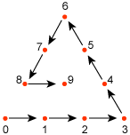
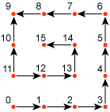

Defines a bézier control patch. The array defines the control points for the patch.
<A3EB5D44-FC22-429D-9AFB-3221CB9719A6>
| Member name | Type | Optional array size | Optional data objects |
|---|---|---|---|
| nControlIndices | DWORD | None | |
| controlIndices | array DWORD | nControlIndices |
The type of patch is defined by the number of control points, as shown in the following table.
| Number of control points | Type |
|---|---|
| 10 | Cubic Bézier Triangular Patch |
| 15 | Quatric Bézier Triangular Patch |
| 16 | Cubic Bézier Quad (Rectangular) Patch |
The order of the control points are given in a spiral pattern, as shown in the following diagrams for triangular and rectangular patches.
Triangular patches used the following pattern.

Rectangular patches use the following pattern.
